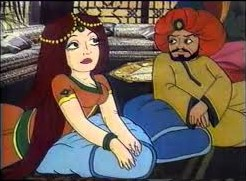

المشاركون :
يُعتبر كتاب ألف ليلة وليلة واحدًا من أعظم الأعمال الأدبية في التاريخ العربي والعالمي، حيث يعكس ثقافة الشعوب العربية في العصر العباسي وما قبله. الكتاب يروي مجموعة من القصص التي تختلف في نوعها من قصص خيالية إلى قصص حقيقية، ويتنقل بين مختلف الأجواء والأساليب السردية التي تضفي على النص طابعًا فنيًا رائعًا. يرتبط ألف ليلة وليلة ارتباطًا وثيقًا بالعصر العباسي، حيث كان هذا العصر يشهد تطورًا ملحوظًا في الأدب والفكر والفن. ينتمي الكتاب إلى نوع الأدب الحكائي، حيث يستعرض قصصًا متعددة تتشابك مع بعضها البعض في تتابع مثير، ويتميز بالأسلوب القصصي الفريد الذي يعتمد على السرد التفاعلي والربط بين الأحداث والزمان والمكان. وقد أُدرجت حكايات ألف ليلة وليلة ضمن التراث الأدبي العربي الذي نال شهرة عالمية ولا يزال يُدرس في مختلف الجامعات.
ألف ليلة وليلة هو مجموعة من الحكايات التي ترويها شهرزاد لملكها شهريار من أجل إنقاذ حياتها، وذلك بعد أن كان شهريار قد قرر قتل كل امرأة يتزوجها بسبب خيانة زوجته الأولى. في كل ليلة، تروي شهرزاد قصة مثيرة تتركها غير مكتملة حتى الصباح، مما يجعل الملك يُؤجل إعدامها ليكتشف النهاية في الليلة التالية. تميزت هذه الحكايات بتعدد الأساليب السردية والغموض، مما جعلها واحدة من أهم الأعمال الأدبية في الأدب العربي والعالمي. في العصر العباسي، كان الأدب يشهد تحولات كبيرة، حيث ازدهرت حركة الترجمة من اللغات الأجنبية مثل الفارسية والهندية، مما أثرى الساحة الأدبية بالكثير من القصص التي تميزت بالسحر والأساطير. أصبح الأدب القصصي يهدف إلى تعليم الناس وتوجيههم من خلال الرموز والحكايات التي تحمل في طياتها معانٍ عميقة.
من بين العديد من الحكايات التي تتضمنها ألف ليلة وليلة، اخترت حكاية شهرزاد وشهريار التي تُعتبر واحدة من أشهر وأهم الحكايات في هذا الكتاب. الحكاية تمثل الصراع بين السلطة والذكاء، والتضحية من أجل المصلحة العامة، كما تجسد المواجهة بين الحكمة والتسلط.
تبدأ الحكاية عندما قرر الملك شهريار قتل كل امرأة يتزوجها بعد خيانة زوجته الأولى. ومع تتابع الأيام، يتزوج شهريار شهرزاد، وهي ابنة وزيره، التي قررت أن تروي له حكايات كل ليلة لتمديد حياتها. في كل مرة، تترك شهرزاد الحكاية معلقة في نهاية الليل، مما يثير فضول الملك ويؤجل تنفيذ حكمه. بهذه الطريقة، تنقلب العلاقة بين القاتل والمقتول، ويبدأ الملك في الانجذاب إلى ذكاء شهرزاد وحكمتها.
شهرزاد: هي الشخصية المحورية في الحكاية، تمثل الذكاء والحكمة والقدرة على التأثير. هي امرأة شجاعة وذكية، تستخدم السرد القصصي كوسيلة للبقاء. شهريار: الملك الطاغي الذي يعكس الجوانب السلبية للسلطة المطلقة. في بداية الحكاية، يكون غارقًا في رغبة الانتقام، لكن مع مرور الوقت، تتغير شخصيته بفعل تأثير شهرزاد.
تمثل الحكاية بشكل عام الصراع بين العقل والسلطة. يمكن ربط شخصية شهرزاد بالذكاء الذي يتجاوز القسوة والظلم، حيث تستخدم حكاياتها كأداة للبقاء والنضال ضد السلطة. من جهة أخرى، يمثل شهريار القوة المستبدة التي تسعى للانتقام دون معرفة الحقيقة. كما أن الحكاية تحمل رمزية عن قوة الفكر في تغيير الأنظمة واستمرار الحياة رغم التحديات. يمكننا رؤية هذا في سياق المجتمع العباسي الذي كان يعاني من الظلم والتسلط، حيث كانت الكثير من الحكايات بمثابة مقاومة غير مباشرة ضد استبداد الحكام وتسلطهم على المجتمع.
السرد المستمر: تتسم الحكاية بنمط سردي لا يتوقف، مما يعكس التوتر الدائم والتشويق المستمر في القصة. كما أن شهرزاد، باستخدام مهاراتها في السرد، تبقي الملك على أطراف أصابعه طوال الحكاية. الحكايات داخل حكاية: أسلوب السرد داخل السرد يُعد أحد أبرز السمات في ألف ليلة وليلة، حيث تقوم شهرزاد بسرد حكاية تلو الأخرى. وهذا الأسلوب يُضفي تنوعًا ويشجع القارئ على الانغماس في التفاصيل.
الوصف الدقيق للأماكن والشخصيات: يمكن ملاحظة استخدام وصف دقيق للأماكن، مثل القصور و المجالس السلطانية، وكذلك الشخصيات التي تمثل ملامح المجتمع العباسي. الوصف النفسي: شهرزاد، في أثناء سردها للحكايات، تُظهر تغيرات في مشاعرها التي تتراوح بين التوتر والهدوء، مما يعكس الصراع الداخلي بين الرغبة في البقاء والمواجهة مع السلطة.
تُعتبر حكاية شهرزاد وشهريار واحدة من أروع الحكايات التي تبرز سحر الأدب العربي في العصر العباسي. من خلال شخصياتها المعقدة، وأسلوب السرد المميز، والرمزية العميقة، تُعبر الحكاية عن صراع الإنسان مع السلطة، وتقدم صورة واضحة عن كيفية تأثير الحكمة والفكر في تغيير الواقع. وفي النهاية، تظل حكاية شهرزاد نموذجًا للإبداع القصصي الذي لا يزال يحاكي الواقع الاجتماعي والسياسي حتى يومنا هذا.
